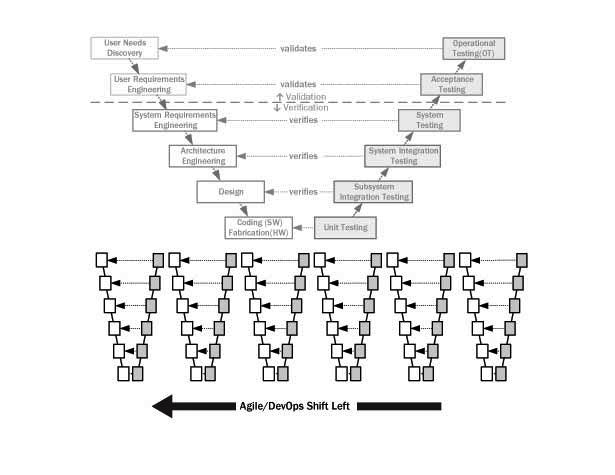
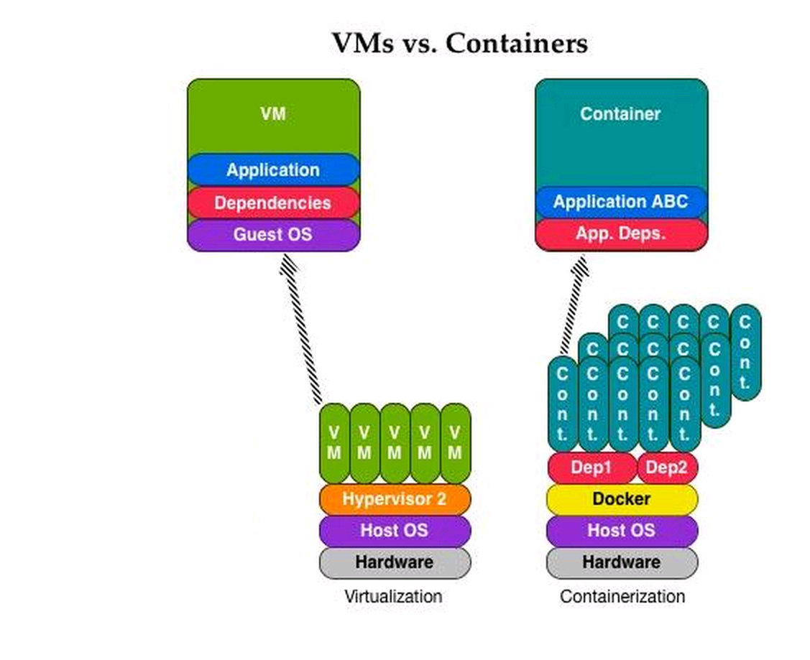
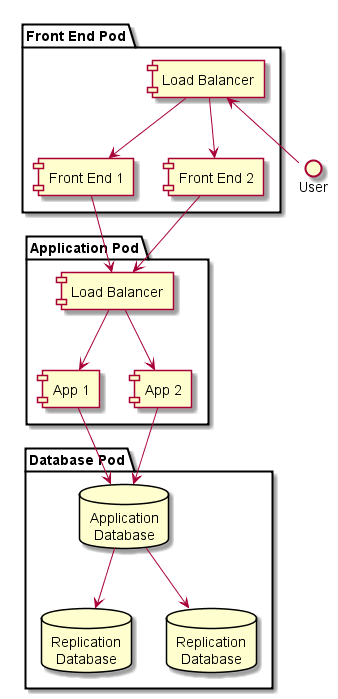

class: center, middle ## An OCIO Digital Literacy Course<BR>_DevOps For Product Owners_ ### Part 1: The Big Questions <img src="images/cc_logo_final_blue_rgb.jpg" alt="Cloud Compass Computing, Inc." width="25%" > Stephen Curran, Cloud Compass Computing, Inc. --- # DevOps For Product Owners ## Part 1: The Big Questions 1. Introductions 1. What is DevOps? 2. What is the Cloud? 3. What is the Business Impact? --- # Approach The course will be completed over two sessions covering a mixture of presentation, lab work and discussion. Please, feel free to jump in at a time with questions, comments, suggestions, snorts, etc. The goal is the material is presented in _your_ context. -- There will be a couple of labs that will allow you to say - *_I done DevOps_* -- Logistics... -- * Any constraints on time? * Washrooms * Food and beverages --- #Introductions ###Who are you? * Project * Role * Digital Services experience? -- ### Who Am I? ##### Stephen Curran, _Cloud Compass Computing, Inc., Quartech Systems_ * I walk the line - business and technology * All about delivery * Agile Development Leader * DevOps since before it was DevOps * BC Government Projects ICM, JAG and MOTI - _School Bus_ and _Hired Equipment_ ??? Digital Servies - Service Design, Agile * Engineer – walking between Tech/Business * Software Development Management – Application Delivery * Biggest – US Federal Government HR System – Avue Central * Classification, Pay Grades, Recruiting, Performance Management * 2.5M Job Applications per year * Entry Hiring for Dept. of Justice Lawyers, Capital Police Officers * Forest Service annual Fire Hire * Crazy management BC Government – ICM, PMO, Courts Projects Pathfinder Projects - School Bus, Hired Equipment --- # What is DevOps? -- DevOps (a clipped compound of "software DEVelopment" and "information technology OPerationS") is a term used to refer to a set of practices that emphasize the collaboration and communication of both software developers and information technology (IT) professionals while automating the process of software delivery and infrastructure changes. It aims at establishing a culture and environment where building, testing, and releasing software can happen rapidly, frequently, and more reliably. .red.bold[*] .footnote[.red.bold[*] Wikipedia] -- Well, that doesn't help... ??? Unfortunately - not a straight forward "product"/"thing" * Cultural component - getting communications and shared goals * Automation and tools So lets hold off on "What is it" and go to... --- # Why is DevOps? ### Roots - merging Developers and Operations work * Devs - make the code * User Interface (UI/UX) * Business Logic/Rules * Integrations * Database (usually) * Ops - runs the code * Servers * Networks * Databases NOTE: DevOps is Development Methodology agnostic, but Agile requires DevOps. --- # Backup a bit - what's an app? .right-column[<img style="height:110%;" src="images/webarchitecture.png">] -- .left-column[ ## Examples * .NET + front end + database * Java + front end + database * MEAN (Mongo Express Angular Node) * Django (Python + front end + database * Front End: Bootstrap, React, Backbone, Angular, etc. * Database: Postgres, SQL Server, Oracle, Mongo ] -- User Stories, usability, logic, rules... --- # Where does an app run? .right-column[<img width="90%" src="images/netarchitecture.png">] -- .left-column[ ## Ops View * Networking zones * URLs - _https://myapp.gov.bc.ca_ * Authentication - siteminder * Encryption - SSL * Firewalls * Servers * Storage ] -- *3x*: Dev/Test/Prod --- # Making it Work - Theory <img src="images/sdlc_waterfall_model.jpg" alt="Waterfall Design" width="65%" > Meetings, documents, agreements and requests --- # Reality .right-column[<img src="images/sdlc_waterfall_model.jpg" alt="Waterfall Design" width="120%" >] -- * Requirements: .bold[_change_] -- * Implementation: .bold[_takes too long_] * Devs: Code Development * Ops: Procure/Setup Servers -- * Testing: .bold[_get skipped_] -- * As a result, deployment is... -- ## ... .bold[_Dreaded_] --- # What Ginger Hears... -- .left-column[<img src="images/WhatDevsSee.png" alt="What Devs See" width="90%" >] -- .right-column[<img src="images/WhatOpsSee.png" alt="What Ops See" width="92%" >] ??? Expected * Devs - 100% of functionality, end user requirements, changes * Ops - 100 other apps to manage, production issues --- # Deployment ### The rubber hits the road and... -- #### ...up pops *_The Wall of Confusion_* .center[<img src="images/overthewall.png" alt="Over the Wall of Confusion" height="350" >] --- # What goes wrong? ###Inconsistent Environments * Developers build in their world, deliver to a different one * Each Dev creates their own development/test capability - best efforts * Execution environment doesn't match production; minimal test data * Periodically delivers code - usually at a milestone - e.g. UAT * Agile _should_ fix that * Test data doesn't match production -- ###Impact: * It works on my machine! ??? * Performance must be acceptable * But volume of data not considered * Options: * Get the data * Other mitigation strategies --- # What goes wrong? ###Ineffective Communications Communication is via Word documents - the dreaded .red[_Release Guide_] * Premise: To deploy this app, do this... * Assumption: The writer knows the readers world...impossible -- ###Impact: * Steps are performed manually * On-the-fly adjustments are made...further invalidating the assumption * On Dev, Test and Prod ??? Example - doing home PC support - remotely Example - assume a piece of software is present - missing, so add it on Test. --- # What goes wrong? ###Unnecessary Dependencies * The _iStore_ optimization * iStores/funding force optimizations on time and cost * Method: Few servers, shared resources -- ###Impact: * Unwanted dependencies between apps * Coordination of multple apps because of shared dependencies * Outages of an app because of an upgrade to another * The Release Party: multiple businesses invovled in one release --- # All of which leads to... -- # The Day After .center[<img src="images/dayafter.jpg" alt="The Day After" width="75%" >] .footnote[Credit: Twentieth Century Fox - _The Day After_] ??? * Users can't log in * Performance is terrible * A feature no longer works * Bugs occur * Non-Functional Requirements * Performance * Monitoring * Logging * Capacity --- # The Reflex Response * We are doing it right, we just need to do it .red[*better*] next time * Test more - take longer, check _EVERYTHING_ -- * Except - the users still want more fixes/capabilities -- <img src="images/WallOfConfusionChange.png" alt="The Wall of Confusion - Change" width="57%" > --- # It's a little worse in Government .right-column[ <img src="http://www2.gov.bc.ca/assets/gov/home/gov3_bc_logo.png" alt="BC Government Logo" width="50%" >] .left-column[ * Each application is a project - an event * Not a product with a lifecycle * Focus is on the app, not long term * Contracted teams * Each starts with own approach & tools * Highly variable contact with Ops * Improvements are local (team) * Ops employees * Work with many teams...they come and go * Limited access to data * Production-type data * Production data volumes ] --- # So...What is DevOps? A culture of applying Lean principles to the end to end systems: -- .bold.blue[_Maximize value; minimize waste_] <img src="images/leanprocess.png" alt="Lean Process - Continuous Improvement" width="55%" > -- ...using some really powerful tools ??? The shoulders of giants - continuously --- # Analogous to Agile And to some extent, driven by agile... <img src="images/Manifesto for Agile Software Development.png" alt="Agile Manifesto" width="75%" > .footnote[.red.bold[*] The Agile Manifesto - http://agilemanifesto.org/] ??? Why driven? - agile requires frequent releases vs. waterfall "one-time" release events - too painful to deploy without automation Working software - not Release Guides Customer - is each other dev <--> ops --- # Problem: The Release Guide * Old/Miserable: Write It in Word - every step (example: ICM) <img src="images/ReleaseGuideTOC.png" alt="Release Guide Table of Contents" width="45%" > -- * Better: Write it as a repeatable script * Not easy - done incrementally - by lazy programmers * ...in isolation -- * Even Better: Create and share tools to improve each step ??? Example - ICM - 24-48 hours of orchestrated activities - 10 people in a room Common - developers best effort COTS Software - especially from early 2000s --- # Solution: The Deployment Pipeline <img src="images/continuous-deployment-pipeline.png" alt="Deployment Pipeline" width="80%" > -- * Subversion, git, github - manage code * Maven, grunt - build tools * xUnit - unit test tools * Selenium, Jmeter - integration test tools * Migrations, Datical, E-F - database upgrades * Jenkins - Continuous Integration, job runner -- * Connected via triggers --- # So Many Tools... <img src="images/XebiaLabsPeriodicTableDevOps.png" alt="Periodic Table of DevOps" width="90%" > .footnote[Credit - Xebia Labs - https://xebialabs.com/periodic-table-of-devops-tools/] --- # Problem: The Day After -- ### Solution: Release Early and Often - "_Shift Left_"  ??? The first production deploy should NEVER be the day before go live!!! Verification of standards - database, security, look and feel, etc., etc. ??? Continuous Integration Example: PCSS - 250 Releases in < 3 years - about once weeks Example: CCSS, School Bus - deployment well before production, usage Non-functional requirements - real data in real production - controlled Benefit - users see the data in THEIR context - not test data Risk Mitigation --- # Problem: The Day After ### Solution: Really Fast Releases -- .right-column[<img src="images/lessthan30minutes.png" alt="Less than 30 minute releases" width="65%" >] .left-column[ Done _properly_ - aka "Roll-forward" 1. Issue found 2. Issue documented - e.g. JIRA entered 3. Issue investigated 4. Issue fixed, checked in 5. Build / Deploy 6. Verify fix 7. Deploy to Test 8. Verify 9. Deploy To Production...phewwww!!! ] ??? Traditional approach - 1, 3, and fix in production --- # Problem: Change is Bad -- <img src="images/ReleasePainSpiral.png" alt="Release pain spiral" width="45%" > .footnote[Credit: Spotify Engineering Culture - https://labs.spotify.com/2014/03/27/spotify-engineering-culture-part-1/] -- #####Big Release - Big Risk - many things to break - hard to fix #####Small Release - Small Risk - only a few things to break - easy to fix ??? This applies to Dev, Test and Prod --- # Problem: Works on my System! -- ### Solution: Consistent Environments .right-column[<img src="images/Pets-Cattle-2.png" alt="Pets vs. Cattle" width="100%" >] .left-column[] #####Tools to enable consistency * Ansible, Puppet, Chef - server setup tools * Subversion, git, github - configuration as code * Chaos Monkey - "no pets" verification -- #####Tools so Dev = Production * Vagrant - VMs * Docker - Containers .blue[Open source licensing _REALLY_ helps here] ??? Home PC vs. work PC analogy Home PC you buy and own for years Work PC you get, use, break and replace In fact - there is a good argument to make home PCs the same --- # Problem: Unnecessary Dependencies -- ### Solution: Stop it!! -- .right-column[<img src="images/DecoupledReleases.png" alt="Decoupled Releases" width="100%" >] .left-column[] -- Fake Dependencies * Enterprise Release Scheduling - don't!! * Eliminate artificial deadlines * Dependencies on people * Dependencies on products/licenses -- Architectural Dependencies * Isolate apps / parts of apps * Different servers ($$$) * Docker, etc. * Don't share databases * But don't duplicate data - use APIs --- # So...what is DevOps? * A culture of continuous improvement as it relates to the _end to end_ delivery of systems * ...supported by a growing (and standardizing) set of automation tools -- .right-column[<img src="images/The-Phoenix-Project.jpg" alt="Decoupled Releases" width="80%" >] .left-column[] -- ### The Three Ways * Systems Thinking * Focus on impacts to the _entire_ system * Create Feedback Loops * Verify your assumptions/theories * Continual Experimentation and Learning --- # Are we doing DevOps?? .left-column[ ### Anti-Patterns * No version control * Devs evironment not like Prod * "Agile" but no DevOps * Cross Project Release Schedules * Text-based Release Guide * Post-deployment Fixes without Releases * Multi-app Release Party Email Chains * Server Names - pets (vs. _Services_) * Test Date = Start UAT Date - 1 Day * Go to Test, go to Production dates * Production Date = Go Live Date - 1 Day * Day After Syndrome - it hurts! ] -- .right-column[ ### Patterns * Version control for everything * Devs world ~= Prod * Many, many, many deployments * Support Agile * Automatic deploy to Dev * Triggered deploy to Test, Prod * No manual steps - _database_ * Early and often to test, prod * Automated tests * Automatic feedback and notifications * App independence * Day After is just like the Day Before ] --- #Lab - Deploying an App .bold[Scenario] To Do Web App * Version control - github * Architecture - typical Web App .bold[Task] Deploy Application --- # What we learned * Automated deployment is possible * Non-Technical people can do it * There are lots of moving pieces * Unthinkable to do all the steps manually -- # What we glossed over... * The code * Server setup * Database setup * Network setup * Security setup * Testing * Integrations * Documentation ??? Most - inherent and documented in the process Integrations - Siteminder, APIs within the government Documentation - Issue Tracking, Wiki/Confluence Documentation - Automatic - side effect of the process --- # Summary .left-column[ * Architecture * Developing/Managing Code * Version Control * Github * Open Source * Issue Tracking * Environments * Servers * Networks * Storage * Security ] .right-column[ * Continuous Integration / Continuous Delivery (CI/CD) * Build * Test * Deploy * Verify * Monitor * Visualizing it all ] .bold.blue[Side Note]: The impact of Open Source on DevOps ??? Side note - many big companies do devops as a means not an end As such - willing to share - and get contributions from others - e.g. google, netflix, etsy, docker, etc. --- # What is the Cloud? * The "Cloud" is the promise of the future * Everybody says so * What does that mean? * Often discussed at the same time as DevOps * What's the connection? ###Let's talk Cloud in the same context --- # * as a Service Once you aren't using your computer for computer purposes - you are using the Cloud * Dropbox / Google Drive - File Storage Service * Office 365 / Google Docs - Office Editing Service * Netflix / CraveTV - Video Entertainment Service Since all gov't apps aren't on our computers - they are all "in the Cloud" So let's talk * as a Service - IaaS, PaaS, SaaS --- # Pizza as a Service <img src="images/pizza.jpg" alt="Pizza as a Service" width="60%" > --- # On-Premise, IaaS, PaaS, SaaS <img src="images/cloud.png" alt="Everything as a Service" width="70%" > --- # HPAS Services / BC Gov't Data Centres .right-column[<img src="images/cloud-OnPremise.png" alt="On Premise Infrastructure" width="40%" >] .left-column[] * On-premise-ish, with iStore orders * Physical and virtual machines (VMs) * Standard images - Windows, Linux * Standard software - e.g. Oracle, .NET * No containers (Docker) * Extra services - patching, monitoring * Backups and restores * .red[New!] IaaS-ish Offering --- # IaaS .bold.red[*] AWS (Amazon), Azure .footnote[.bold.red[*] And a lot more services...] .right-column[<img src="images/cloud-IaaS.png" alt="Infrastructure as a Service" width="30%" >] .left-column[] * Now in Canada * Procurement: credit card, website * By use billing - minute and gigabyte * Spin up servers, configure storage/network * Resilency - multiple regions (data centres) * API brings the power (more later...) --- name: paas # PaaS: HPAS OpenShift, AWS, Azure .right-column[<img src="images/cloud-PaaS.png" alt="Platform as a Service" width="30%" >] .left-column[] * Dynamic setup and configuration * Spin up app components * Network them * True cattle - that die (and get replaced) * The cattle are less stable - but that's Ok * New technologies * Containers (Docker and others) * Orchestration (Kubernetes and others) --- # Digression! Physicals, VMs, Containers #### Goals: Resource optimization, consist execution - same everywhere  --- # Container Benefits * Easy isolation - _feels like a whole computer_ * Really lightweight - high density deployment - many on one host * Create once, run everywhere - the "Shipping Container" analogy * Run containers on dev machine and on Production - same thing! ## But... * New and evolving quickly * Complex to manage at scale - which is where they are most useful * True use...building blocks --- # Digression! What is Orchestration? .left-column[<img src="images/simplearchitecture.png" alt="Simple Architecture" width="25%" >] -- .right-column[] -- .left-column[ * What if _Front End 1_ node crashes? * What if the load goes up? down? * What if the main database crashes? * What if we want to deploy an update? ] ??? Note the names on the servers - manually order, setup, connected, firewalls --- # Orchestration ```yaml apiVersion: extensions/v1beta1 kind: Deployment metadata: name: rss-site spec: replicas: 2 template: metadata: labels: app: web spec: containers: – name: front-end image: nginx ports: – containerPort: 80 – name: rss-reader image: nickchase/rss-php-nginx:v1 ports: – containerPort: 88 ``` --- template: paas -- .left-column[ #### Devs dream * Create code * Declare configuration, evolve it easily * Declare requirements * Deploy easily ] -- .right-column[ #### Challenges * New technology * New techniques * For now: Open Source only ] --- # SaaS: Office 365, Salesforce * End users login, use the services * Some integration with the Enterprise - Single-Sign On (SSO) ### Salesforce - also a PaaS * Roots as SaaS - Sales automation system * Coming to Canada - running on AWS Canada instance * Has evolved into a PaaS - .bold[Force.com] * Heavy on the "configure" model vs. code - especially the backend * Option to build custom frontend talking to Force.com BC Gov't Salesforce deployments (MTICS, MSDSI, JAG) but have been challenging * Data Centres in the US - so no personal information * Informational apps - no stored data * Data Residency handling for personal information --- # * as a Service Options for Business Government hosted services are (sort of) easy * Traditional - with iStores and a DIY-attitude - you are on your way * IaaS - with a DIY-attitude - you are on your way * PaaS - with an I-want-to-learn-attitude - you are on your way Cloud Options are becoming possible: * Azure, AWS IaaS are in Canada * Azure and AWS - many other services * Cloud BC option is coming * Salesforce will soon be in Canada - on AWS * Concern is governance - where are all the apps, where is the data? --- #Cloud Summary and Directions ###Four major Cloud models - On-Premise and I, P and S aaS * HPAS supports (mostly) On-Premise, but also IaaS and PaaS (via Red Hat OpenShift) -- * New public cloud options are coming - but not easily obtained * Cloud BC could enable those options * Potential: Private/Public Cloud - capabilities extend to use Azure/AWS resources -- * Direction is towards PaaS - user expectations make requirements too complex for any other approach --- #Review ###Why is DevOps? * We looked at: * Complexity in deploying applications using documentation and manual processes * Application Architecture * Why traditional approaches are hard for Devs and Ops * Why traditional approaches are prevalent in Government - project-focus -- ###What is DevOps? * We learned: * A culture of applying Lean principles to the end to end systems * Backed by lots of powerful tools - largely developed and shared in the open * Capabililties built on capabilities - the shoulder of giants * Lab - deploying a complex Web Application - easily --- #Review ###What is the Cloud? * We discovered: * All the Services (and perhaps some digressions...) * Options for delivering applications on platforms * In BC - HPAS is the main choice, but more options are coming * Regardless, the underpinnings are DevOps * Declare what you need - let the platform figure it out -- ###How does DevOps and the Cloud Impact Business? * Summary: * Style of developing (agile), delivering apps (DevOps) - iterative, small chunks * Control over when to deliver * The potential for shorter cycles - idea to business value * Options for where to deploy apps --- #End of Part 1 ---